The Path to Log Likelihood
Jason Bryer, Ph.D.
2022-03-01
Source:vignettes/log_likelihood.Rmd
log_likelihood.RmdThis document outlines the various ways we could model dichotomized outcomes and why the log likelihood is the preferred approach. We will work through a small data set from Wikipedia that examines the relationship between the number of hours studied and passing an exam.
study <- data.frame(
Hours=c(0.50,0.75,1.00,1.25,1.50,1.75,1.75,2.00,2.25,2.50,2.75,3.00,
3.25,3.50,4.00,4.25,4.50,4.75,5.00,5.50),
Pass=c(0,0,0,0,0,0,1,0,1,0,1,0,1,0,1,1,1,1,1,1)
)
ggplot(study, aes(x = Hours, y = Pass)) +
geom_point(aes(color = factor(Pass))) +
scale_color_brewer('Pass', type = 'qual', palette = 6)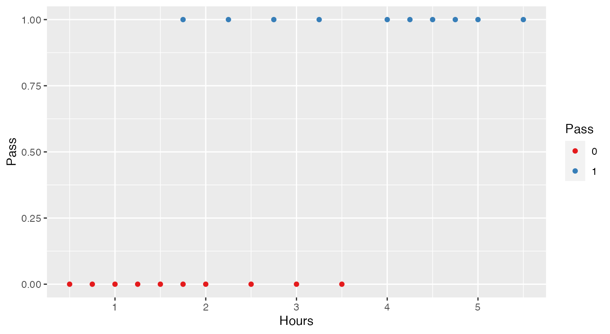
Linear Regression
We will first consider simple linear regression.
linear_regression <- lm(Pass ~ Hours, data = study)
linear_regression##
## Call:
## lm(formula = Pass ~ Hours, data = study)
##
## Coefficients:
## (Intercept) Hours
## -0.1539 0.2346The resulting linear regression line is presented below.
ggplot(study, aes(x = Hours, y = Pass)) +
geom_point(aes(color = factor(Pass))) +
geom_abline(slope = linear_regression$coefficients[2],
intercept = linear_regression$coefficients[1]) +
scale_color_brewer('Pass', type = 'qual', palette = 6)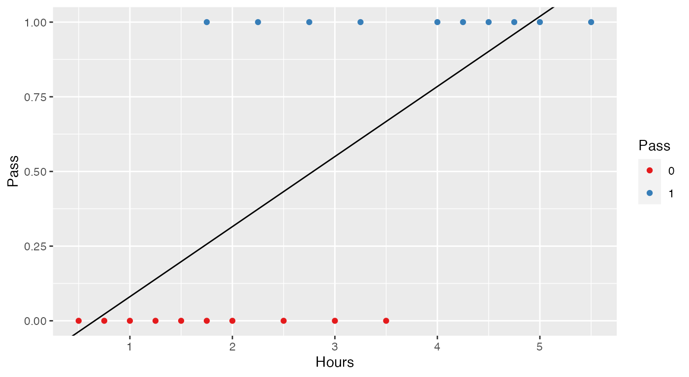
The \(R^2\) for this model is 0.48 which, on the surface, does not appear to be too bad. However, examining the residual plot shows that the homoscedasticity assumption of linear regression is clearly violated.
study$linear_resid <- resid(linear_regression)
ggplot(study, aes(x = Hours, y = linear_resid)) + geom_point()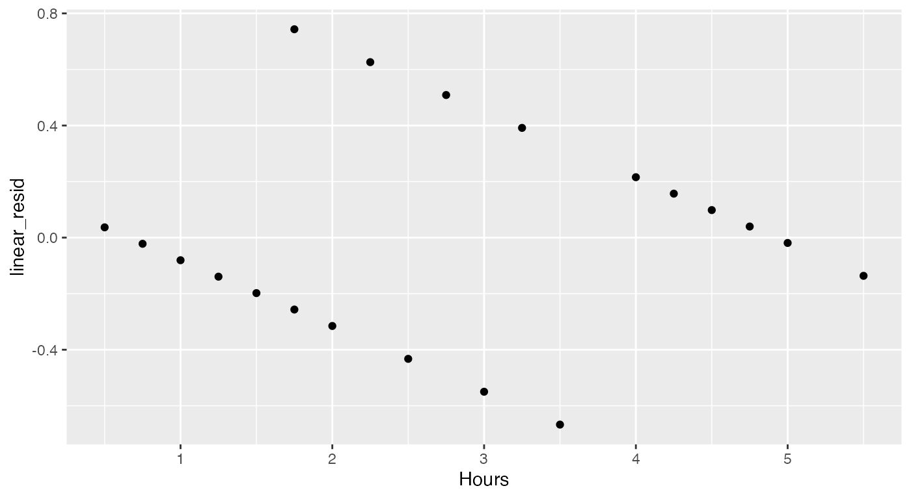
As we proceed, we will want to estimate the parameters using a numeric optimizer. The optim function in R implements a number of routines that either minimize or maximize parameter estimates based upon the output of a function. For ordinary least squares, we wish to minimize the sum of squared residuals (RSS). The function below calculates the RSS for a given set of parameters (i.e. slope and intercept).
ols_linear <- function(parameters, predictor, outcome) {
a <- parameters[1] # Intercept
b <- parameters[2] # beta coefficient
predicted <- a + b * predictor
residuals <- outcome - predicted
ss <- sum(residuals^2)
return(ss)
}To get the parameter estimates, we call the optim function with the ols_linear function defined above.
optim_ols_linear <- optim(
c(0, 1), # Initial values
ols_linear,
method = "L-BFGS-B",
predictor = study$Hours,
outcome = study$Pass
)
optim_ols_linear$par## [1] -0.1539353 0.2345956We see that the parameter estimates are the same as the lm function to several decimal places. For the rest of this document, we will use this approach to estimate parameter estimates and simply modify the metric we wish to optimize.
Minimize Residuals for the Logistic Function
Since the relationship between hours studies and passing is not linear, we can try a non-linear method. The logistic curve is an S shape function which, on the surface, would appear to be a better approach.
logit <- function(x, beta0, beta1) {
return( 1 / (1 + exp(-beta0 - beta1 * x)) )
}
ggplot() +
stat_function(fun = logit, args = list(beta0 = 0, beta1 = 1)) +
xlim(-5, 5)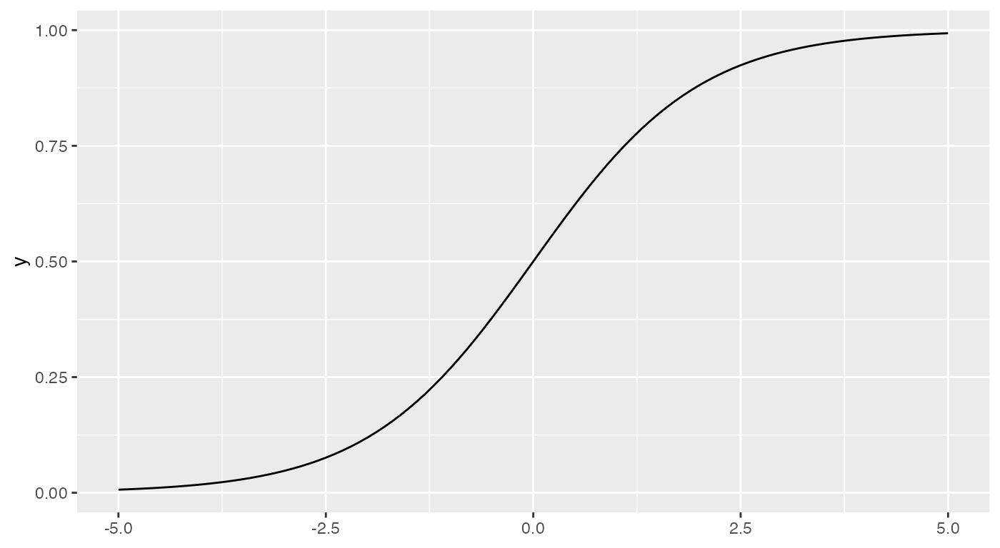
Our first approach will be to minimize the sum of the absolute value of the residuals.
min_abs_resid <- function(parameters, predictor, outcome) {
a <- parameters[1] # Intercept
b <- parameters[2] # beta coefficient
p <- logit(predictor, a, b)
resid <- outcome - p
return(sum(abs(resid)))
}
optim_min_abs_resid <- optim(
c(0, 1), # Initial values
min_abs_resid,
method = "L-BFGS-B",
predictor = study$Hours,
outcome = study$Pass
)
optim_min_abs_resid$par## [1] -253.21409 67.52301
ggplot(data = study, aes(x = Hours, y = Pass)) +
geom_point(aes(color = factor(Pass))) +
geom_function(fun = logit, args = list(beta0 = optim_min_abs_resid$par[1],
beta1 = optim_min_abs_resid$par[2])) +
scale_color_brewer('Pass', type = 'qual', palette = 6)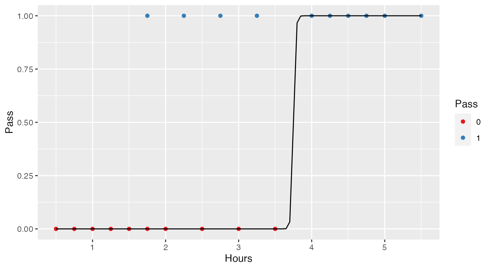
Examining the resulting model shows that this approach is an overfit of the data. Next, let’s try minimizing the RSS using the logistic function.
ols_logistic <- function(parameters, predictor, outcome) {
a <- parameters[1] # Intercept
b <- parameters[2] # beta coefficient
p <- logit(predictor, a, b)
resid <- outcome - p
return(sum(resid^2))
}
optim_ols_logistic <- optim(
c(0, 1), # Initial values
ols_logistic,
method = "L-BFGS-B",
predictor = study$Hours,
outcome = study$Pass
)
optim_ols_logistic$par## [1] -3.296428 1.199072
ggplot(data = study, aes(x = Hours, y = Pass)) +
geom_point(aes(color = factor(Pass))) +
geom_function(fun = logit, args = list(beta0 = optim_ols_logistic$par[1],
beta1 = optim_ols_logistic$par[2])) +
scale_color_brewer('Pass', type = 'qual', palette = 6)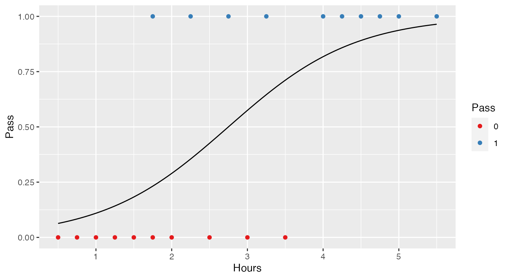
This certainly appears to do a better job of fitting the data. Let’s examine the residuals.
study$predict_ols_logistic <- logit(study$Hours,
beta0 = optim_ols_logistic$par[1],
beta1 = optim_ols_logistic$par[2])
study$resid_ols_logistc <- study$Pass - study$predict_ols_logistic
ggplot(study, aes(x = Hours, y = resid_ols_logistc)) + geom_point()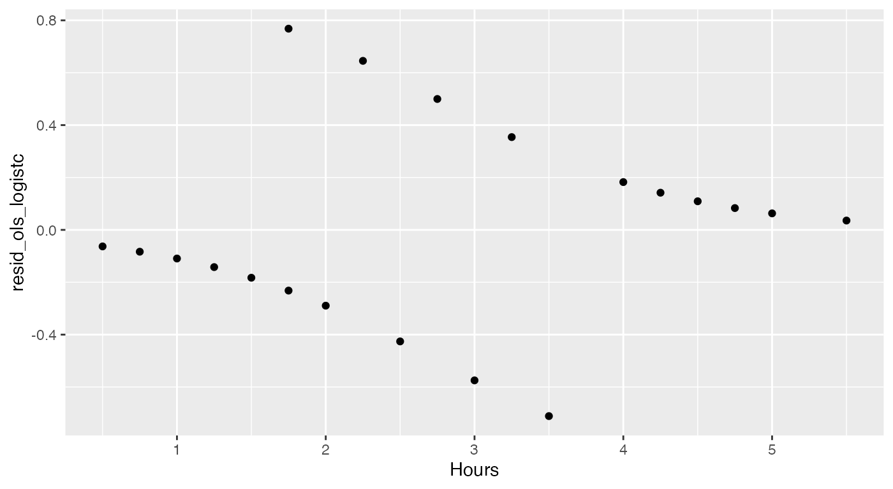
And like above, the homoscedasticity assumption is violated.
Maximize Log Likelihood
The results of logit function can be interpreted as the likelihood of the outcome given the independent (predictor) variable. Instead of minimizing the residuals, defined above as the difference between the likelihood and observed outcome, we can minimize the log of the likelihood. Note that in the function below, we are using the log of 1 - likelihood (we’ll discuss why below).
loglikelihood.binomial <- function(parameters, predictor, outcome) {
a <- parameters[1] # Intercept
b <- parameters[2] # beta coefficient
p <- logit(predictor, a, b)
ll <- sum( outcome * log(p) + (1 - outcome) * log(1 - p))
return(ll)
}
optim_binomial <- optim_save(
c(0, 1), # Initial values
loglikelihood.binomial,
method = "L-BFGS-B",
control = list(fnscale = -1),
predictor = study$Hours,
outcome = study$Pass
)
optim_binomial$par## [1] -4.077575 1.504624We see that the fit is slightly different here (the OLS approach is included as a dash line).
ggplot(data = study, aes(x = Hours, y = Pass)) +
geom_point(aes(color = factor(Pass))) +
geom_function(fun = logit, args = list(beta0 = optim_ols_logistic$par[1],
beta1 = optim_ols_logistic$par[2]),
linetype = 2) +
geom_function(fun = logit, args = list(beta0 = optim_binomial$par[1],
beta1 = optim_binomial$par[2])) +
scale_color_brewer('Pass', type = 'qual', palette = 6)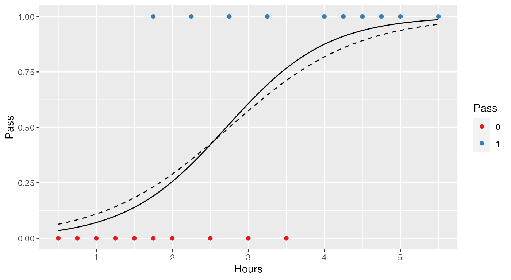
The log Function. Since we know our outcomes are either zero or one, and hence bounded by zero and one, then we are only considering values of log(x) between zero and one. The plot below shows that log(x) for all \(0 \leq 1x \leq 1\) is negative, going asymptotically to \(-\infty\) as x approaches zero.
ggplot() + geom_function(fun = log) + xlim(0, 1)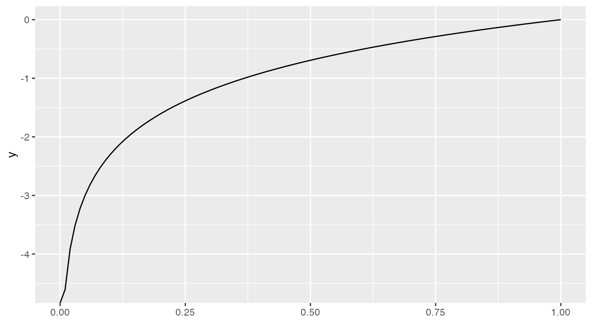
Since \(log(1) = 0\), we want to reverse the likelihood, that is, we will take the \(log(1 - likelihood)\) so that smaller errors result in larger log-likelihood values.
To put this all together, we will calculate the likelihood (i.e. predicted value using the logistic function), and the log-likelihood (what we maximized). The plot shows the observed values (as triangles), predicted values (as squares), and the log-likelihood (as circles). The lines represent the values we are taking the log of. That is, if Pass == 0, then we take the log of 1 - likelihood; conversely if Pass == 1 then we take the log of the likelihood. The circles below the line y = 0 are the log values. As can be seen, since they are all negative we wish to maximize the sum of their values to achieve the best fit.
study$likelihood <- logit(study$Hours,
beta0 = optim_binomial$par[1],
beta1 = optim_binomial$par[2])
study$log_likelihood <- study$Pass * log(study$likelihood) + # If Pass == 1
(1 - study$Pass) * log(1 - study$likelihood) # If Pass == 0
ggplot(data = study, aes(x = Hours, y = Pass)) +
geom_smooth(method = 'glm', formula = y ~ x,
method.args = list(family=binomial(link='logit')), se = FALSE, alpha = 0.2) +
geom_hline(yintercept = 0) +
geom_function(fun = logit, color = 'grey50', size = 1,
args = list(beta0 = optim_binomial$par[1], beta1 = optim_binomial$par[2])) +
geom_segment(aes(xend = Hours, y = 1 - Pass, yend = likelihood, color = factor(Pass)), alpha = 0.5) +
geom_point(aes(y = likelihood, color = factor(Pass), shape = 'Predicted'), size = 3) +
geom_point(aes(color = factor(Pass), shape = 'Observed'), size = 3) +
geom_point(aes(y = log_likelihood, color = factor(Pass), shape = 'Log Likelihood'), size = 3) +
scale_color_brewer('Pass', type = 'qual', palette = 6)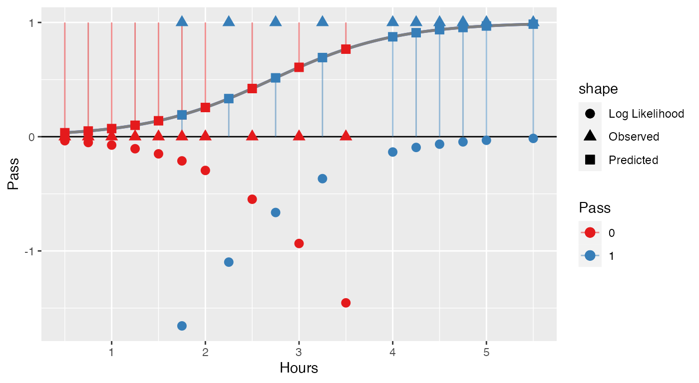
Assumptions
Although maximizing the log-likelihood provides a result similar to minimizing the sum of squared residuals using the logistic function, the log-likelihood doesn’t rely on the assumptions of residuals OLS does. Namely:
- There is no assumption of linearity between the dependent and independent variables.
- Homoscedasticity (constant variance) is not for logistic regression (but is for linear regression).
- The residuals do not have to be normally distributed.
There is an assumption of linearity between the independent variable(s) and the log-odds.
lr.out <- glm(Pass ~ Hours, data = study, family = binomial(link='logit'))
plot_linear_assumption_check(lr.out, n_groups = 5)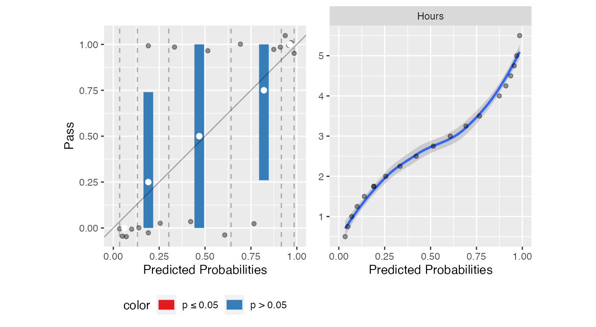
The Box-Tidewell test can be used to check for linearity between the predictor(s) and the logit. This is implemented in the car package in R. We are looking for a non-significant value here.
study$logodds <- lr.out$linear.predictors
car::boxTidwell(logodds ~ Hours, data = study) # Looking for a non-significant p-value## MLE of lambda Score Statistic (z) Pr(>|z|)
## 1 0.8758 0.3811
##
## iterations = 0There are a number of assumptions logistic regression shares with OLS, namely:
- Outliers - check to see if there are any strongly influential outliers.
- No multicollinearity
- Independence of observations
- Sufficiently large sample size